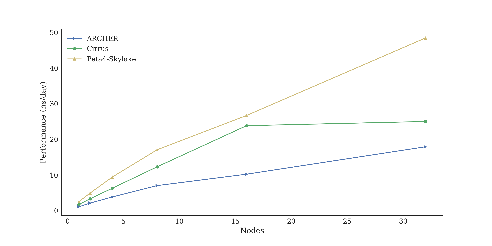
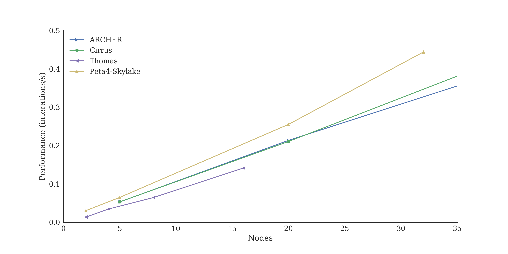

HPC facilities for UK researchers
Andy Turner, EPCC
a.turner@epcc.ed.ac.uk
Slide content is available under under a Creative Commons Attribution-NonCommercial-ShareAlike 4.0 International License.
This means you are free to copy and redistribute the material and adapt
and build on the material under the following terms: You must give appropriate credit, provide
a link to the license and indicate if changes were made. If you adapt or build on the material
you must distribute your work under the same license as the original.
Note that this presentation contains images owned by others. Please seek their permission
before reusing these images.
Built using reveal.js
reveal.js is available under the MIT licence
Overview
- EPCC
- UK HPC Facilities
- ARCHER - UK National Supercomputing Service
- DiRAC - STFC national HPC service
- UK National Tier-2 HPC facilities
- Other facilities
- Getting Advice
- Open Source Benchmarking
- Summary
- One of Europe's top HPC centres
- 27 years old: ~90 staff
- Fully self-sustaining: £8m turnover per annum
- Leading UK national HPC provider
- Range of expertise: HPC to Data Science and Cloud
- Work closely with academia and industry
- FARR INSTITUTE: data analytics service for NHS Scotland safe haven
- SSI: better software, better research
- FORTISSIMO: Europe's largest collaborative programme for HPC with SMEs
Facilities hosted at EPCC ACF
- ARCHER - UK National Supercomputing Service
- DiRAC Extreme Scaling - STFC national HPC service
- Cirrus - National Tier-2 HPC resource
- UK RDF - Large scale data store and analysis
- ATI - Novel data science platforms
- FARR - NHS Scotland safe haven and data analysis
- Catalyst - Arm processors for HPC
UK HPC Facilities
HPC Tiers
- Tier-1 Facilities: ARCHER and DiRAC
- Tier-2 Facilities: (between Tier-1 and Tier-3!)
- Tier-3 Facilities: institutional facilities
- Other Facilities: e.g. commercial cloud
Distinctions often blur between different tiers
Information on facilities and how to access them
Open Source, community developed resource
HPC Services Covered
- ARCHER - UK National Supercomputing Service
- DiRAC - STFC national HPC service
- UK National Tier-2 HPC facilities
- Other facilities
UK National Supercomputer Service


ARCHER Service Design
- High core count distributed memory: 1000+ cores
- "Traditional" capability HPC
- Main users: Materials science, Climate/ocean modelling, CFD, etc.
- Growing interest in non-traditional use: e.g. data science, bioinformatics
Cray XC30: 118,080 cores (4920 nodes)
2× 12-core Xeon per node; 64/128 GiB memory
ARCHER Support
Large amount of support provided by EPCC
- Helpdesk with access to all EPCC expertise
- Free training across the UK
- eCSE calls for software development - now closed
- Benchmarking/profiling work to support users
All free at point of use
Access to ARCHER
- Instant Access (EPSRC remit only)
- Small amounts of resource to test ARCHER facilities
- ARCHER Driving Test
- Complete simple test and gain small amounts of resource to test ARCHER facilities
- Resource Allocation Panel (RAP) (EPSRC remit only)
- Applications for large amounts of ARCHER resource for 1 year
- Grant Access
- Add access costs to grant application (notional for EPSRC/NERC, real otherwise)
STFC National HPC Service
- Range of different systems
- Covers capacity to capability use
- Main HPC resource for STFC
- Extreme Scaling: Edinburgh Tesseract
- Designed for applications that scale to high core counts
- Memory Intensive: Durham COSMA
- High core counts using high memory per core, high performance interconnect and I/O
- Data Intensive: Cambridge Cumulus and Leicester
- High performance interconnect and I/O, range of processor technologies
Access to DiRAC
- Seedcorn Access
- Small amounts of resource to test DiRAC facilities. Always available by contacting the DiRAC service.
- Resource Allocation Committee (RAC)
- Applications for large amounts of DiRAC resource for either 1 year (small projects) or 3 years (large projects).
Tier2: National Facilities
Nationally accessible, located across the UK

Intel Xeon Clusters
- Cirrus@EPCC
- 10,080 core Broadwell, FDR Infiniband Hypercube
- HPC Midlands+
- 14,336 core Broadwell, 3:1 blocking EDR Infiniband (764 core non-blocking)
- 10 POWER8 per nodes with 1 TB memory
- Cumulus@Cambridge
- 36,864 core Skylake, Intel Omnipath
- Materials and Molecular Modelling Hub
- 17,280 core Broadwell, 3:1 blocking Intel Omnipath (864 core non-blocking)
Other architectures
- JADE
- 22 Nvidia DGX-1: 2× Xeon + 8× Nvidia P100 GPGPU
- Cumulus@Cambridge
- 90 nodes: Xeon + 4× Nvidia P100 GPGPU, EDR Infiniband
- 384 Xeon Phi nodes (96 GiB memory per node), Intel Omnipath
- 50 node Hadoop Cluster
- Isambard@GW4
- 10,000+ ARMv8 cores, Cray Aries Interconnect
- Flexible HPC:
- Traditional HPC
- Task farming
- Data science
- HPE/SGI ICE XA:
- 2× 16-core Xeon per node, 256 GiB memory
- 10,080 cores (280 nodes)
- Supported by EPCC experts:
- Broad range of experience and expertise
- Close links with ARCHER technical support

Cirrus Software
- Wide range of supported software:
- HPC applications: e.g. CASTEP, OpenFOAM, GROMACS
- Data science software: e.g. Hadoop, Spark
- Profiling and debugging tools
- Customisable environment:
- Singularity containers
- Hosting of user-controlled virtual machines
Access to Tier2
- Instant Access (EPSRC remit only)
- Small amounts of resource to test Tier2 facilities
- Available on Cirrus and Cumulus
- Resource Allocation Panel (RAP) (EPSRC remit only)
- Applications for large amounts of Tier2 resource for 1 year (next call due Mar/Apr 2019)
- Grant Access
- Add access costs to grant application (notional for EPSRC, real otherwise)
- Materials and Molecular Modelling Hub
- Access via Materials Chemistry (MCC) or UK Car-Parrinello (UKCP) consortia
- Cirrus@EPCC
- http://www.cirrus.ac.uk
- HPC Midlands+
- http://www.hpc-midlands-plus.ac.uk
- Cumulus@Cambridge
- http://www.csd3.cam.ac.uk
- JADE
- http://www.jade.ac.uk
- Isambard@GW4
- http://gw4.ac.uk/isambard
- Materials and Molecular Modelling Hub
- https://mmmhub.ac.uk
Other HPC Facilities
International Facilities
- PRACE
- Large-scale European facilities
- Number of different call types available
- http://www.prace-ri.eu
- US DoE INCITE
- Access to the largest HPC facilities in the USA
- Need to demonstrate need for extreme parallel scaling
- http://www.doeleadershipcomputing.org/incite-program/
Commercial Cloud
All major cloud providers offer some sort of HPC with pay per access.
- Complex to setup at the moment
- Cost per hour is more expensive than UK facilities
- Can be extremely flexible and grow/shrink on-demand
- Viable option for large number of single node jobs, not yet there for multinode MPI jobs
Getting Advice

From EPCC
- Helpdesks: ARCHER and Cirrus
- Service focussed
- Access to full range of EPCC expertise as required
- Add EPCC staff to proposals
- Use up small amounts of "left-over" money in existing grants
- Co-supervise MSc projects
From local HPC Champions
- Experienced HPC users or service staff
- Willing to help local users with advice on:
- Access routes to HPC
- Suitability of different resources
- Where to go for more help

Campaigning for the recognition of the RSE role, creating a community of RSE's and organising events for RSE's to meet, exchange knowledge and collaborate.
Join the community!
Open Source Benchmarking

What is open source benchmarking?
- Full output data from benchmark runs are freely available
- Full information on compilation (if performed) freely available
- Full information on how benchmarks are run are freely available
- Input data for benchmarks are freely available
- Source for all analysis programs are freely available
Problems with benchmarking studies
Benchmarking is about quantitative comparison
Most benchmarking studies do not lend themselves to quantitative comparison
- Do not publish raw results, only processed data
- Do not publish details of how data was processed in suffcient detail
- Do not provide input datasets and job submission scripts
- Do not provide details of the how software was compiled
Benefits of open source approach
- Allows proper comparison with other studies
- Data can reused (in different ways) by other people
- Easy to share and collaborate with others
- Verification and checking - people can check your approach and analysis
CASTEP (plane-wave DFT): Al Slab

GROMACS (classical N-body): 1400k Atoms

OpenSBLI (CFD): 1024 Taylor-Green Vortex

Overview
- Intel Skylake Gold systems generally best performing for most applications
- Accelerators (GPUs) not been incorporated into benchmarking yet (coming Spring 2019!)
- Results for Arm64/AMD systems not available yet in this set but early indications are engouraging
Initial performance comparison: https://edin.ac/2Q1m7ot
GW4 Isambard Arm64 performance results: http://uob-hpc.github.io/assets/cug-2018.pdf
Summary
Test Access
ARCHER Driving Test: Access to ARCHER for any researcher based at UK institution
Instant Access: Access to ARCHER, Cirrus, CSD3 for EPSRC-remit research
DiRAC Seedcorn: Access to DiRAC for STFC-remit research
Specific Calls for Compute Time
EPSRC RAP: Access to ARCHER and Tier2 for EPSRC-remit research
DiRAC RAC: Access to DiRAC for STFC-remit research
Access via grant proposals
ARCHER: any funding body possible - notional costs for EPSRC/NERC
Tier2: any funding body possible - notional costs for EPSRC
DiRAC: no time via grant applications - DiRAC RAC used instead
- Wide range of HPC facilities available to UK researchers
- Different access mechanisms for different research areas
- EPCC can support your research in a number of ways - please get in touch!
- HPC Champions and RSE network also available for help and support
- Benchmark data available to help you choose the right service